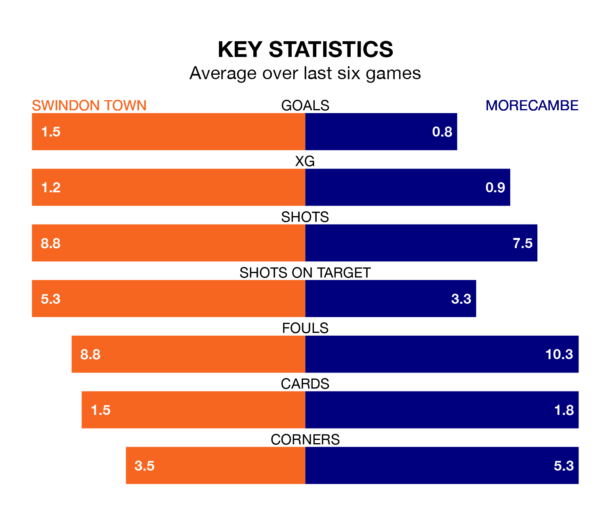

Morecambe make the journey to the County Ground to play Swindon Town on Saturday looking to pick up points to end their four-game losing streak.
Morecambe's struggles have left them with six points from their last six EFL League Two matches, while their opponents have earned nine from a possible 18.
With 74 goals in 45 games so far this season, Swindon are scoring more than average in the league with 1.6 goals per game. But they are conceding more than average too, letting in 80 goals at a rate of 1.8 per game.
Morecambe, meanwhile, are below average scorers, with 1.4 goals per game, compared to a league average of 1.5. They have conceded 1.7 goals per game.
In the last 10 years, Swindon and Morecambe have played each other on six occasions. Swindon won four of them and they drew twice.
On average, the Robins scored 2.0 goals and the Shrimps 0.7 in those matches.
Their last meeting was on September 23, when they played out a 2-2 draw.
Town are 19th in the table after 45 games, of which they have won 14 and drawn 11, earning 53 points.
The Shrimps are four places ahead of the Robins in 15th, with 17 wins and nine draws putting them on 60 points.
In Daniel Kemp, the hosts have one of the league's most on-form strikers so far this season. He has notched 17 goals in 45 appearances, to sit ninth in the scoring charts.
His goal rate of one every 198 minutes is slightly quicker than that of Michael Mellon, the away side's top scorer with a goal every 134 minutes, and a total of 13 goals in 22 games.
Swindon's last match was on April 20, a 2-0 loss against Grimsby Town.
Morecambe lost 2-1 against Forest Green Rovers last time out, also on April 20, with Charlie Brown on the scoresheet.
Updated: 07:59 (UTC), 26/04/24